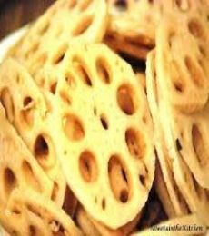
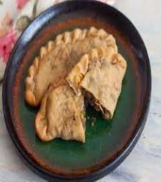

MANALI
WHERE ADVENTURE MEETS SERENITY
The magnetic town of Manali beckons to the soul of adventurers, nature lovers as well as solace-seekers. Nestled in the Himalayas, in the north Indian state of Himachal Pradesh, Manali is a charming hill station. A part of the northern end of the Kullu Valley, it is situated by the Beas river at a height of 1,926 m above sea level. Floral meadows, gurgling streams, snow-capped mountains, lofty mountain passes, Castles and Buddhist monasteries give this tiny town the allure of a fairy-tale setting. One can explore Manali on foot, or try paragliding over its rolling green slopes and apple orchards. If you are coming here in winters, hit Manali's snow-covered slopes for skiing. Adventure enthusiasts also come here for river rafting and trekking. Manali also finds a place in the pages of Hindu mythology. The vast expanse of varied and awe-inspiring landscapes offer some of the most exciting sporting pursuits. A potpourri of cultures and experiences, Manali is the pemFect mountain getaway for everyone.
=========|| Food And Cuisines ||=========
1) Dhaam

Dham, a popular traditional feast prepared during marriages, local festivals, and special occasions of Himachal Pradesh, is a complete food not only according to Ayurveda but also nutritionally. The ethnic foods, include rajmah madra, kadi, khatta, sepu badi, and so forth, exhibit a treasure of food heritage and are an integral component of the diet of the people in the state. The cuisine is developed keeping in mind not only the geographical and climatic conditions of the state but also according to the traditional methods under natural conditions mostly from the staple ingredients.
2) Bhey
Bhey is a traditional dish from the North Indian state of Himalyan Pradesh. In this delectable recipe lotus stem is cooked with ginger, garlic and onion and added with a handful aromatic spices. Bhey recipe is easy and quick to prepare and is loaded with flavours and take you on a taste ride like none other. A delight for vegetarians this dish breaks away from the usual paneer, mushrooms and soya preparations and will give your taste buds a delightful change. Take a mid week break from your regular rotation of dishes and prepare this recipe, your family members will definitely love this dish. Pahari Cuisine is unique and flavoured generously with yogurt and cardamom. Serve the Himachali Bhey along with Tawa Paratha and Gujarati Dal for your comforting lunch or dinner.
3) Sidu
Sidu is a local bread made from wheat flour. The flour is kneaded and set aside for some hours for the yeast to settle and the dough to rise. This dough is put on direct flame of bonfire to be par-cooked and then later steamed to complete the cooking. The cuisine of Himachal Pradesh is based on curds and ghee or clarified butter. Since fresh vegetables are not easily available they use a lot of lentils, seeds to make their food.Traditionally you will find Siddu in Mandi, Kullu, Manali, Rohru and Shimla. This distinct bread is usually enjoyed with ghee or butter alone or can be savoured with mutton or daal as well.
=========|| Famous Places ||=========
1) Jogini Falls

Jogini Falls is a waterfall with a stream running down to join the river Beas in the Kullu Valley below. It is sacred to the village goddess Jogini & is therefore a place of female power, known as a Shakti Peeth. One can enjoy an energizing dip under these cascading falls while admiring the towering snow clad mountains all around. Below the falls there is a small shrine and below that is a Main Shrine (small Castle). Villagers go to Jogini Devi to make offerings & to ask for her intercession. As it is such a peaceful, even soporific, sacred place, villagers also go there occasionally to sleep. Special occasions are marked by the cooking of food & the performance of rituals.
2) Manali Wildlife Sanctuary

The exquisite greenery and the presence of wild mountain animals make the Manali Wildlife Sanctuary one of the must see destinations in Manali. This amazing sanctuary is located about two kilometers away from the main town and is spread over 3,180 hectares of land. Established in the year 1954, the Manali Wildlife Sanctuary includes animals like the Himalayan Black Bear, Musk Deer, Flying Fox, Stripped Hyena, Himalayan Tahr, Indian Hare, Barking Deer, Palm Civet, Serows, Himalayan Yellow Throated Martens, and Kashmir Flying Squirrels. Endangered animals like leopards, Brown Bears, and Goral can also be seen here. The rich forest of this Manali sanctuary is covered with trees like Deodar, Horse Chestnut, Kail, Maple, and Walnut. The best time to visit this marvelous place is during winter, when the surroundings are livelier and more enjoyable.
3) Naggar Castle

Naggar Castle is a medieval castle, located in Kullu, Himachal Pradesh, India. Built by Raja Sidh Singh of Kullu in around 1460 A.D, it was taken over to Himachal Pradesh Tourism Development Corporation (HPTDC), to run as a heritage hotel, since 1978. It was the official seat of kings for centuries. According to a legend, Raja Sidh Singh used stones from the abandoned palace (Gardhak) of Rana Bhonsal to build the castle. He ordered the labourers to form a human chain over the Beas river connecting its left and right banks to transfer the stones manually. The castle survived the earthquake of 1905. While most houses in the valley and the nearby city of Jawa were completely ruined, the castle's use of earthquake-proof techniques helped it sustain despite the calamity.
=========|| Things To Do ||=========